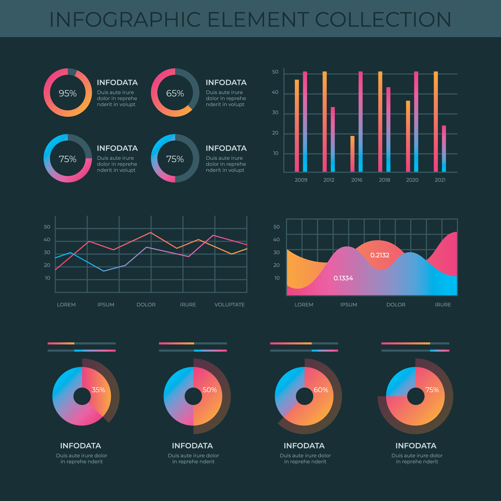

Tableau / Power BI
In data visualization, I was encouraged to use Tableau or Power BI to set up KPIs and create a dashboard to support our analysis of the data.
Data analysis on four approaches of COVID-19 controlling
In the project of analysis of ‘What is the most effective approach to COVID-19’, I used Tableau as the tool for creating data visualization. Four methods are discussed in this project: 1) enforcing good hygienic processes, 2) Encouraging testing, 3) Controlling the flow of people through various travel restrictions, and 4) Encouraging vaccination. As this problem is time sensitive, I believe the important time-stamp could be a good indicator to cut in the analysis. Hence, I searched the NSW health website and got the timeline of policies of the NSW government. Combined with the positive cases data, it is quite clear whether some of the methods have a positive effect or not. The figure below is a sample of new positive cases in a week in NSW and all states of Australia. It indicates whether border control has a positive effect on controlling COVID-19 spreading.
The bar chart below shows the strategy of encouraging testing. This strategy affects discovery of the potential positive cases in the wild. It is an indicator for how many people are getting involved with the COVID-19. However, there may be a delay of real positive cases in the figure. Hence, this strategy needs to refer to another strategy to get a conclusion.
Data visualization on different data breaches
Another project is to create a dashboard that indicates the data breach in the US. There are different types of data breach and the targets have different levels of importance. Hence, I decide to separate the data due to the types and target importances. One of the KPIs is the increasing rate of each breach type and each level of targets. The dashboard contains the most dangerous breach method, the most breached target, the increasing rate, and the whole view of distribution of breaches. The figure below indicates four types of breach changes with the year.